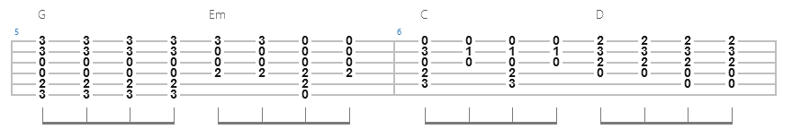

This website uses the songsterr api to search for guitar tabs and chord charts. You can search using any keyword, a specific artist, or both as terms. However, if your keyword and artist may conflict. For example, searching "smells like teen spirit" as a keyword and "Bob Dylan" as an artist will return no results.
The radio buttons below the search bars allow you to select the type result you want to be returned.
Guitar tabs are a type of music notation that indicates the finger position for each note of a song they look like this:
Each line indicates a string and each number indicates a fret.
A chord chart shows the chord progression of the song notated with the letters A, B, C, D, E, F, and G for each note, in addition to a tab to show the finger positions for each chord. They look like this:
